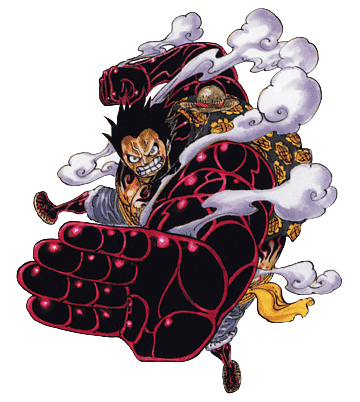
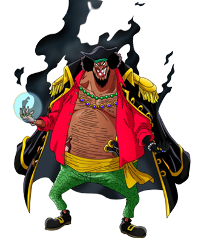
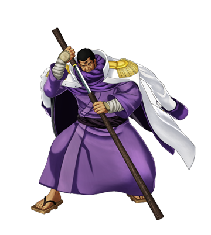
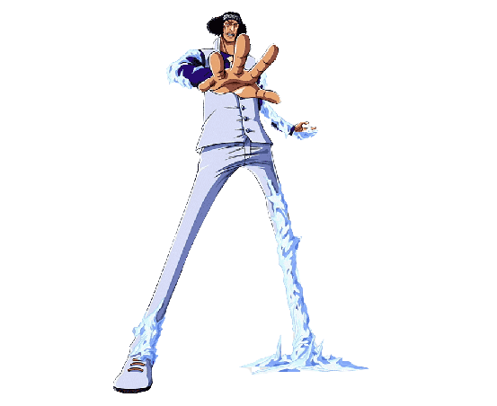
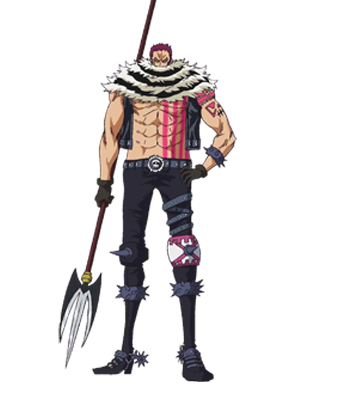

-
LUFFY
DESCRIÇÃO
Luffy passou a maior parte de sua vida sendo um usuário da Gomu Gomu no Mi, um fruto que permite que seu corpo estique como borracha. Por ter pelo menos 14 anos de experiência com tais poderes, Luffy é capaz de usar suas habilidades das mais diversas formas e cada vez mais tem se mostrado cada vez mais forte. Por esse motivo.
-
BARBA NEGRA
DESCRIÇÃO
Barba Negra é o único personagem no mundo de One Piece que possui os poderes de duas Akuma no Mi ao mesmo tempo. Além de possuir a Yami Yami no Mi que é considerada a Akuma no Mi mais poderosa de todas, ele também foi capaz de roubar a Gura Gura no Mi após a morte de Barba Branca. Por ter tais habilidades, Barba Negra é considerado invencível e conseguiu um posto entre os Yonkous, e ainda falta muito para podermos ver a total extensão de seus poderes.
-
ISSHO FUJITORA
DESCRIÇÃO
Issho, comumente conhecido por seu epiteto Fujitora, é um almirante da Marinha.[3] Ele foi recrutado para a Marinha através de um Projeto Militar Mundial durante o timeskip de dois anos, juntamente com o companheiro recém-chegado Aramaki, ambos preenchendo as duas vagas nas posições de almirante causadas pela demissão de Kuzan e pela promoção de Sakazuki.
-
KUZAN AOKIJI
DESCRIÇÃO
Kuzan, mais conhecido por seu epíteto Aokiji, é um antigo almirante da Marinha e o primeiro a aparecer na série. Ele foi indicado por Sengoku para a posição de Almirante da Frota. Entretanto, após perder o cargo para Sakazuki, ele deixou a Marinha e se afiliou com os Piratas do Barba Negra
-
KATAKURI
DESCRIÇÃO
Charlotte Katakuri é o segundo filho homem e terceiro filho da Família Charlotte, e o irmão mais velho de Daifuku e Oven. Ele é um dos Três Generais da Doçura dos Piratas da Big Mom[9], bem como o Ministro da Farinha de Totto Land , governando sobre a Ilha Komugi. Devido a suas ações, ele é um grande antagonista do Arco Ilha Whole Cake.